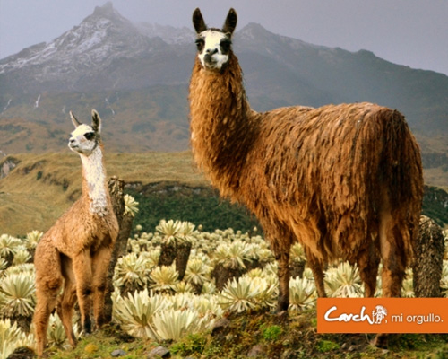
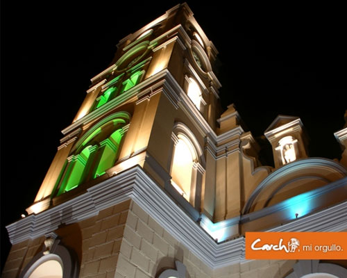
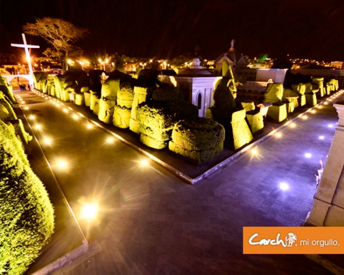

LUGARES PARA VISITAR
| CITIOS | DESCRIPCION | MAS INFORMACION |
|---|---|---|
| VOLCÁN CHILES | A 38 Km de Tulcán al sur occidente de Tufiño, majestuoso volcán (4723 m), hito fronterizo entre Ecuador y Colombia. Rodeado de frailejones y pajonales adornados con la exótica rosa urco, albergue de cóndores, tórtolas, perdices y gavilanes, sitio ideal para quienes gustan del andinismo y treeking.  |
Click para mas Contenido |
| CATEDRAL DE TULCÁN | De estilo Neoclásico. Dada la esbeltez de las pilastras intermedias, proyecta pequeños contrafuertes hacia el exterior. Existe una diversidad de estilos en las construcciones de los alrededores entre ellos: republicano, moderno y tradicional. Inicia su construcción en el año de 1926, posteriormente en 1933 gracias a los planos del padre Huberto Brüningse da inicio a esta magnífica arquitectura concluyéndose en 1951, fecha en la cual se decora con estuco.
Ocupa un espacio de 1700m2 aproximadamente. Está compuesta de tres naves, tiene crucero y ábside. Decorado con estuco en donde sobresalen ángeles, arcángeles, frutas y ramas de olivo realizado en 1951 por Antonio Ramírez.  |
Click para mas Contenido |
| CEMENTERIO MUNICIPAL | Es una de las bellezas más representativas a nivel de América Latina. Esta joya arquitectónica lleva el título de Patrimonio Cultural del Estado. Reconocido por los habitantes locales y extranjeros, como una maravilla moderna. Esta "Escultura en verde" es única en su género, fue creada por el señor José Azael Franco en 1936. Las figuras de ciprés denominadas escultura en verde, encuentran en el cementerio tienen estilo griego, egipcio, incaico, árabe, y formas naturales.
Actualmente se pueden observar figuras referentes a la fauna de las islas Galápagos, ídolos y mascarones de las culturas indígenas del Ecuador, columnas góticas, arcos, entre muchas otras.  |
CLick aqui para mas Contenido |